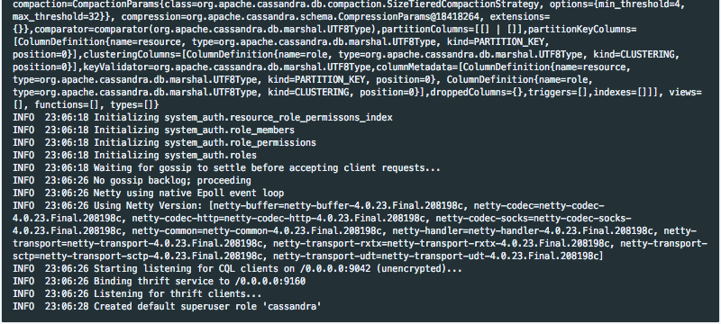
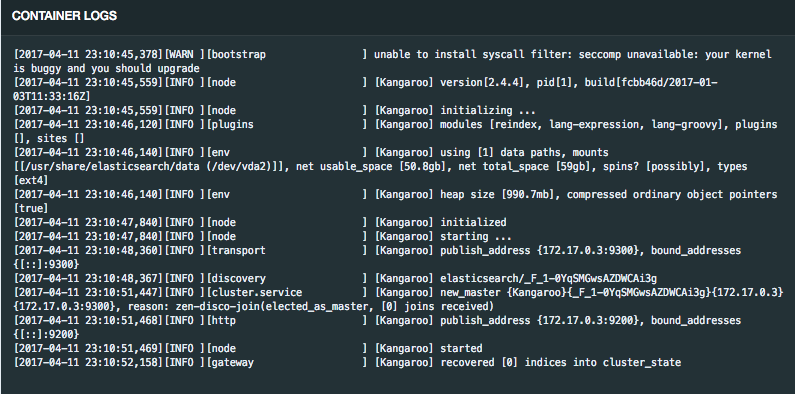
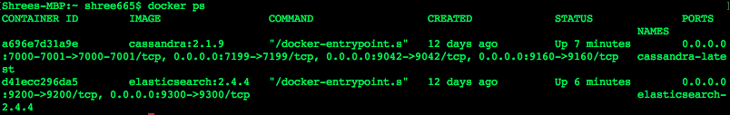

JanusGraph is new community project under the Linux foundation. It is forked from TitanDB code. JanusGraph incorporates support for the property graph model with Apache TinkerPop (the open source graph computing framework) and its Gremlin graph traversal language. According to JanusGraph website:
JanusGraph is a scalable graph database optimized for storing and querying graphs containing hundreds of billions of vertices and edges distributed across a multi-machine cluster. JanusGraph is a transactional database that can support thousands of concurrent users executing complex graph traversals in real time.
I will show how you can run JanusGraph locally so that you can try out yourself since it might become the de-facto implementation of TinkerPop. I will be using Cassandra and Elasticsearch for backend databases.
Procedure
- Start Gremlin console as per Starting with Gremlin Console
- Define your connection properties in properties file to connect to Cassandra and Elasticsearch docker images as follows. (hostname of Cassandra and Elasticsearch might change on your machine).
storage.backend=cassandrathrift storage.hostname=localhost cache.db-cache=true cache.db-cache-clean-wait=20 cache.db-cache-time=180000 cache.db-cache-size=0.25 index.search.backend=elasticsearch index.search.hostname=localhost index.search.elasticsearch.client-only=true - Run
docker pull cassandra:2.1.9command to pull cassandra from Docker Hub. It is using old version of cassandra. - Run
docker pull elasticsearch:2.4.4command to pull elasticsearch from Docker Hub. - After successful pull, run following command to run cassandra docker image.
docker run -e CASSANDRA_START_RPC=true --name cassandra-latest -p 7000:7000 -p 7001:7001 -p 7199:7199 -p 9042:9042 -p 9160:9160 -t -d cassandra:2.1.9 - Look for the following message. If you get following message, then your cassandra has started successfully 
- Run
docker run –name elasticsearch-2.4.4 -p 9300:9300 -p 9200:9200 -t -d elasticsearch:2.4.4command run run elasticsearch docker image

- Check both images are running by running
docker pscommand and see both images are running or not. You should see Cassandra and Elasticsearch images running as follows

- Run following command to connect to your backend using Gremlin console.
gremlin> graph = JanusGraphFactory.open('.../website/janusgraph.properties') ==> standardjanusgraph[cassandrathrift:[localhost]]Once a graph exists, a graph traversal g is configured that will allow graph traversal. Graph traversal is used to query the graph data and returns results. A graph traversal is bound to specific traversal source that is the standard Janus traversal engine.
- Create traversal instance so that we can query our graph database. We can also use traversal instance to create vertices.
gremlin> g = graph.traversal() ==>graphtraversalsource[standardjanusgraph[cassandrathrift:[localhost]], standard]
The graph commands usually add vertices and edges to database or get other graph information. the g commands generally do queries to obtain results.
- Load some vertices and start playing with JanusGraph.
Copyright of gremlin image is © apache.org